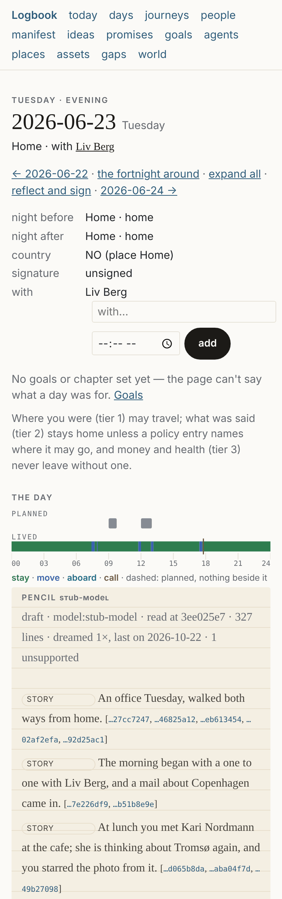

The Day
logbook day YYYY-MM-DD [--json] reads one calendar day back from the record: where you slept
either side of it, which country it counts for, how you moved and where you stayed, what attached
to each stay and who was there, the flights, when you slept and the day's steps, the weather, and
which sources spoke. It is a reader (ADR 0013): a function of the record at its head, derived every time
and never written. Nothing is appended, and not even policy/stays.json is created by it.
logbook day 2026-06-13 # a Saturday, as text
logbook day 2026-06-13 --json # the same Day as one JSON object, every row with its line ids
logbook day 2026-06-13 --no-anniversaries # without the days together years ago
logbook day # today
logbook day sign 2026-06-13 # sign it: you read the page and these are the day's facts (RFC 0034)
logbook day sign 2026-06-13 --kept 4181 --carried 4183 # and what became of the commitments on it
logbook day sign 2026-06-13 --confirm none --at 2026-06-13T22:10:00+02:00 # nothing confirmed, signed when you clicked
logbook day reflect 2026-06-13 --audio evening.m4a --sign # close it in your words, then sign it
The header says whether you have signed the day (· unsigned, or · signed 2026-06-14 08:15),
and the last row, readiness, says for each class of source — mail, message, meeting, location,
photo, calendar — whether the day has lines of it and which usual sources have not delivered.
Both are the signed day; day sign and day reflect are the things under day
that write: day sign one line, day reflect the reflection as one note and, with --sign, the
delegations you accept and the signature. On a signed day a symbol stands before each line the
signature disposed of (✓ kept, ✗ missed, – dropped, → carried); an unsigned day prints none. A day
with a reflection shows it in a section of its own, reflection, below the header and above the
timeline: your words, as you said them (closing the day by voice).
What a Day is
The record's atom is the line. The reader's atom is the stay: a span at one place, as
derive stays finds it. A Day is the ordered list of stays and moves between 00:00 and 24:00
in the record's zone (between your day_start and the same clock the next morning when you set
one, below), with everything else — calendar entries, transcripts, notes, mail, calls,
messages, photos, keepers — attached to the stay or move it falls inside. The night of a day is
the longest stay in the night window (22:00 to 08:00 by default), and it decides home or away; a
night with no such stay is in transit.
Aboard an asset (a boat, an aircraft, a car registered in assets.json) the grammar nests: when
your position matches the asset's own track, the run of stays and moves aboard it is one stay
aboard <asset>, and inside it the same grammar runs on the asset's position — a berth, a
passage, an anchorage. The asset's movement never fragments the stay. The rule is below, under
Aboard an asset.
The day begins at…
…midnight, unless you say otherwise. logbook setup day_start 06:00 writes "day_start": "06:00" to
logbook.json (the record's settings), and from then on a line whose local clock is
before 06:00 belongs to the day before: the concert that ended at 01:30 on the 13th is on the Day of
the 12th, the coffee at 07:00 on the 13th's. The Day of the 12th then runs from 06:00 on the 12th to
06:00 on the 13th, and its header says so:
2026-10-12 Monday · unsigned · 06:00 to 06:00 the next day
Everything on the page follows: the timeline is clipped to that span (a stay that began the evening
before shows from 06:00), the lines attached and unplaced are the ones on the day so defined, the
sources and the health line count them, and the signed day's page is that page. The nights keep their
window (22:00 to 08:00, policy/stays.json); the night after is the one that holds the day's end, the
stay you were at at 06:00 the next morning, and the night before the one that holds its start. With
06:00 those are the nights they are at midnight; a boundary at or after the night's start, 23:00
say, ends the day inside the next date's night, and that night is the night after. The comparison is
on your wall clock, so the night the clocks change moves no line. A day_start that is not a clock
HH:MM ("6am") is refused, naming it, and nothing is guessed. At midnight the header and the JSON
are as they always were.
What it shows, in order
- Header — the date and weekday; the night before and the night after (a named place,
aboard <asset>with the asset's position that night, or the coordinates;homewhen the stay lies in a place of kindhomeor within 400 m of one — the night then names that place — elseaway;in transitwhen no stay reaches the minimum); the country, from the night's position by the same rulerollup countriesuses (a place's own country, else the nearest large airport's zone), from the longest stay of the day when the night is in transit; the day's all-day calendar entries; and, on a day you said who was there (logbook with, the acts), with: everyone a row confirms and everyone you stated, your word marked(you said). Beside the night after's place, the day's weather in short,4° · rain, when the day has a weather line of that place.
Under the night before, the Night line, when a night ends on the day:
night before Home · home
night slept 23:10–06:40 · 7 h 20 min · training 45 min
night after Home · home · 4° · rain
When you slept — the first and the last minute asleep, on the record's clock — how long asleep
(never in bed or awake), and the day's training when it has some. It is derived when the Day is
read, from the health-sample/v1 lines already in the record (Apple Health's sleep stages and
workouts), and nothing is written. A night is one device's asleep stages with no gap over two
hours between them; it belongs to the day its last stage ends in, under your day_start, so with
06:00 a night from 23:10 to 06:40 is one night of the 13th, never split between the 12th and the
13th. Of the nights that end on a day (a nap is one) the longest is its night, and of two devices
the longer, never their sum. Training is the union of the day's workout spans (on the day they
start), so a run the watch and a phone app both recorded counts once. A day no night ends on has
no row; under --json it is night (start, end, start_local, end_local, asleep_s,
device, lines — the stages — and training: minutes and lines, or null), a key present
only on such a day, so the Day's object is otherwise the one SPEC §3.2.7 gives.
2. Timeline — one row per stay, stop, move and flight that touches the day, in time order.
A stay that began the evening before shows from 00:00 and one that runs on shows to 24:00
(from and to the day's start under day_start);
the duration printed is the part on the day, and --json keeps the real span beside it. An
unnamed stay at an airport is the airport's code and city (ZRH, Zurich: within 3.5 km of the
reference point of an airport with scheduled traffic, 2 km of any other); else its coordinates,
with near <place>, x km for the nearest named place within 5 km (59.9200,10.7400 near Home,
1.0 km), else the city of the nearest large airport within 30 km in parentheses
(53.5998,10.0130 (Hamburg)), the trips route's rule. A stop with nothing attached says so.
A move prints its distance, duration and mode (walk, car, train, boat, flight), with the
airports (OSL → ZRH) only when it is a flight: its speed and distance are a flight's (mode
flight), or a flight/v1 line lies inside it or over at least half of it, whose departure
and arrival it then names. A car or train move whose ends lie near an airport — a 1.6 km drive
from the car park to the terminal — names none. A move with no points that lasts a silence or more
(merge_gap_s) and is not a flight is a gap: the tracker did not see it, so it places
nothing. Flights come from the flight/v1 lines standing — the merged set infer flights
maintains, one line per flight — with their evidence: tracked, inferred or declared; the
move a flight covers names it under --json.
Under each row: its attachments, named for events (with their time; an entry several calendars
carry is one event, see below), transcripts (with their voices when the line has them, who spoke
most first and never a time beside a voice, Middag · you · Kari Nordmann and 1 unnamed · recorded
with consent: unknown, a voice not yet named by its label, who they are;
a transcript another of the day supersedes is not listed beside it), notes (the first line), mail
threads (with the message count), calls (the length first, 19 min ← Ola Nordmann, never beside the
name) and keepers, and counted for messages and photos; then with, the people there, split into confirmed — declared in a note
(with <name>, only a name the record's resolution lines make a person: with US names
nobody), speaking in a transcript (a voice you named, or a participant; the far end of a call is
never there, and a person you would not name is counted, with.unnamed), attending a timed calendar entry that overlaps the
stay — and proposed — a face the photo library tagged, by id or by the name it gave it
(extra.faces; a person only when the name is exactly a resolution line's label, else as
written), an attendee of an all-day entry. The owner is never their own company. A move
carries attachments but no company. A line you starred (logbook star) is marked ★ where it
is listed, your goal, review and chapter rows among them.
3. Unplaced — the day's events, transcripts, notes, mail and calls that fall inside no stay or
move: what the calendar planned where the track has nothing, or what happened while the tracker
was silent.
Then Stories about this day (RFC 0028, a draft): the story/v1 lines standing whose
refers_to covers the date — a told year, month, day or decade — each as show prints it
(📖 refers to 1961 — told by Ola Nordmann to Kari Nordmann) with the teller's confidence and
the day it was told, and its first line under it. A story is a line on the day it was told;
it is never in the timeline of the day it is about, because the timeline is what was observed
and a story is what someone said. A story whose time is a phrase (before the war) is about no
day. The section is absent when no story is about the day.
Then anniversaries: the days together exactly 1, 2, 3, 5 and 10 years before, with the same
canonical person — a stay together, and so a day of a journey together, by the rule people
counts a day together with (the with module's confirmed set) — one row each, the nearest years
first, then by name, five at most: 1 year ago, 2024-11-03: Kari Nordmann · Office. A person
only the sources saw, never named by a resolution line, is never one. Under --json it is
anniversaries (years, day, id, name, where, lines), a key present only on a day
that has one, so the Day's object is otherwise the one SPEC §3.2.7 gives.
--no-anniversaries leaves them out. See people.
4. Health — the night's sleep in hours (the asleep stages of the night that ends on the day,
per device the union of their spans, the longest device), the day's steps (the larger device per
quarter hour, summed), the resting heart rate (the day's mean), from the health-sample/v1
lines standing. A correction that supersedes a line wins over it. The text says the sleep once,
on the Night line, so the health row prints the steps and the resting heart rate, and a day whose
health lines were only sleep has no health row; the JSON keeps sleep_h as SPEC §3.2.7 gives it.
5. Weather — when the day has weather/v1 lines (RFC 0026, logbook sync weather,
adapters/weather.md), one row: the lowest and highest temperature, the precipitation, the
strongest wind, the weather in a word, sunrise and sunset, for the place of the night when the day
has one, else the first, and · 2 places when the day was spent in more than one. A day without
them has no row.
6. Sources — every source with a line on the day, how many, and its newest line's time, so a
tracker that fell silent in the afternoon is seen to have.
6. From the circle — one from <name> section per page someone shared for this day and
logbook receive verified (RFC 0025, <root>/circle/<name>/<date>/): how many lines by kind,
the tier it was shared at and the day it was shared, then the titles of its events, transcripts,
notes, mail and calls, one per row. The page is read from the folder it was kept in, never from
the chain; under --json it is received, each named line with its id. A day nobody shared
has no such section.
7. The draft — printed between the header and the timeline, above every note of the day: the
standing draft/v1 line a model wrote about the day (the dream, RFC 0036), headed
draft with the model's name, the head and how many lines it read, how many times the day was
dreamed and when last, and how many segments are unsupported; then one row per segment with the
part it belongs to (day, thread, question, people, promise), its text and its evidence ids
shortened. An unsupported segment starts with ~ and ends with unsupported (and why, when the
reader found an id that is not on the day), never run into the prose around it and never as a
fact. Then the events it proposes (the dream), one row each, event N
with the span, the title, the place and the people: a proposal waiting for you starts with ? and
ends with proposed and its evidence (greyed on the serve page); one you accepted (day sign
--accept N) says confirmed as #seq, and its event line sits among the day's events in the
timeline, where it places its people as a calendar entry does. What you can keep is numbered
after the proposals: a sentence learned, decided, about an idea and the photo of the day end their
row with it (keep 3; at the end, so no number stands beside a name the sentence opens with), a
proposed link keeps its own (link 2), and day sign
--keep N keeps one before it signs; a sentence or link you kept says kept as #seq (Keep and
sign). The draft is a proposal; your signature and your notes are the
facts. --no-dream leaves it out. An earlier draft of the day
stays in the record, listed by id under --json, and show lists every draft line on the day it
was written. A draft follows the dream entry of policy/crossing.json, not the head: one above
the entry's max_tier today (lowered, expired or removed since) is not shown, and when the day's
standing draft is one, the row says superseded by policy and why, and nothing of the draft, its
proposed events included (the dream, When the entry changes).
8. Goals, reviews and chapters (RFC 0036, goals) — the chapter the day is in, in the
header after the signed state (· chapter The Lofoten summer, with , clashes with <name> should
two standing chapters hold the day); after the draft, a reviews row per review standing on the
day the verdict is about, let go · month · <the goal's current text> · <note>, ending written
2026-10-11 20:30 when it was written on a later day; then the goal and chapter lines written on
the day, each · superseded when a later line replaced it.
9. A call's synthesis — one row under a transcript's own row, whether the call is attached to a
stay or unplaced, collapsed: synthesis · 1 action, 2 topics, 1 decision, 1 open thread, 1 personal ·
model:…, with how many items are unsupported when any is. It is the standing draft/v1 line of
unit event a model wrote about that transcript (the synthesis of a call,
transcript synthesize); its items, actions on top, are behind a toggle in serve and under
syntheses in --json. --no-dream leaves it out with the draft. A synthesis follows the dream
entry as the draft does: one above the entry's max_tier today is not shown, and the row under the
call says superseded by policy and why, and nothing of the synthesis (the synthesis of a
call, When the entry changes).
What makes a stop a stay
A short cluster of points — the ten minutes at the cafe — is a stop unless something of the
owner's falls inside it: an event, a transcript, a note, a call, a message or a photo (SPEC §3.2.3
rule 5). Then it is a stay, marked promoted: the evidence says the owner was there, and
duration is only the fallback.
An event counts only when it happened somewhere:
- it carries a location (any source: a Wallet pass with its venue, a ticket with its address), or
- it carries attendees (someone was invited to it), or
- its source is one whose entries are places and times whatever they carry: a calendar
(
ios-calendar;ics, whichsync gcaland Takeout'sCalendar/write too) or Google Home's history (Takeout's Home App, an arrival or the alarm at the door; sourcegoogle-takeout, calendargoogle-home).
A Notion page edited, a Drive file changed — by the owner or by someone else on the owner's file —
happen nowhere: they carry no location and no attendees, and their sources are not physical. Inside a
stop they do not make it a stay, and attached does not count them (stays.somewhere). SPEC 0.4
§3.2.3 rule 5 says the same, test for test, and ADR 0023
says why. The Day still shows them under the row their time falls in (Boat
jobs, Edited Crew list ×3), as it does any event; they are simply not evidence of where the owner
was. A task (task/v1, sync gtasks) is not an event and was never evidence.
One event from several calendars
The same entry often reaches the record twice: from the phone's calendar (ios-calendar) and from
a Google calendar or a subscribed .ics (ics; sync gcal writes its lines under that source, so
two calendars of one source are told apart by the calendar they name). Two event lines are one
event when they come from different calendars, start less than a minute apart, last as long as each
other or one of them is all-day, and carry the same title (case, accents and whitespace aside) or
name the same flight (XY561, XY 561). The Day shows it once: the richest line of the set — a
timed entry before an all-day one, then the one that fills the most fields (location, attendees,
notes) — with the others named, Check-in XY 561, from 07:40 to 08:00 · from 2 sources (ics, ios-calendar), and
under --json its sources (its own first) and the ids of every line it stands for. The fold is
at read time only: every line stays in the log as written, and the sources row counts each.
A Notion row seen by sync notion and again by sync notion --relations-backfill is one event
too. The backfill's relations line adds the row's relations to an edit the record holds already,
so the Day shows the page's own line on the day, with notion its one source and the backfill's
line among the ids it stands for; the Day page of logbook serve shows it once as well. A page with
no other line on the day keeps the backfill's line as its row. show still lists both lines, as it
lists every line of the day.
sync drive writes one line per Drive file, hour and activity, so a morning spent on one document
is several lines. The Day page of logbook serve reads them as one row, the file's name and what was
done to it counted, Budget 2027 · 5 edits, 2 comments, standing for every line it folds; the fold
is the page's alone, and logbook day and --json list each line, as before
(In a browser).
In a browser
The Day page of logbook serve is this Day with what a page can add: a sentence under the header
on what crosses where (the tiers in plain words), the week's draft on its Sunday and a link to it
from the six days before, the day's track drawn from the stays' own coordinates, each row's photos
as a strip under it (starred first, a thumbnail only from the record's own attachment store, the
rest counted), a link from every row that is a line to the line as written (/line/ID), a photo
review at its foot, and the acts: a star, with…, Reflect and Sign
(In a browser, the acts). A day no
device saw, the phones off, still takes with…: "I was with Ola" is one line, the line logbook with
writes.
The page also shows everything the day held, folded so it stays readable
(In a browser). Under each stay or move, where this page counts
the messages, the page lists them by conversation: who it was with (the person the record names, else
the handle as the line has it, a group by its name), the network (whatsapp, telegram,
instagram, …) and how many, then each message's time, sent or received and its text, the first
280 characters of it, the whole a click away on its line. A conversation of more than 30 shows its
first 10 and folds the rest under show all N. At the foot, Everything this day held: every line of
the day, by source and in time order, each with its time, its kind, one line of what it was and a
link to it, the count per source on its summary as the sources row has it. Every fold is closed until
you open it, or until ?open=1 opens them all. Both come from the one reading the page makes of the
day; logbook day and --json are as they were, and so is a static site's Day (logbook export
site), which counts the messages.
The page's four shapes
The Day page has one look and four shapes, and it takes the one that fits the hour each time it is asked for. Nothing about the shape is stored; it is worked out from the clock, the evening hour and the day's signature on every request.
- morning: today, from the day's start until 11:00, or until the first stay of note after the night (somewhere that is not where you slept), whichever comes first.
- live: the rest of today.
- evening: today from the evening hour, the one the daily messages use
(
LOGBOOK_NOTIFY_EVENING_HOUR, in the environment or in~/.config/logbook/sync.env), and every earlier day not signed. With no evening hour set, today stays live until midnight. - signed: a day with a standing signature.
A day ahead of today is live: nothing lived yet, the plan so far. A static site (logbook export site)
has no clock, so its Day is the evening's, or the signed day's. It also skips the two parts that read
beyond the day for every page it writes, the promises of Loose ends and Looking back.

The demo record (logbook demo --out ~/Demo/Logbook), Tuesday 23 June, in the evening, before it
was signed; the same day signed leads the README. The
demo carries no real drafts, so the pencil here is a stand-in model's (stub-model), written for the
picture from the day's own lines. Nothing in it is real.
?shape=
/day/2026-06-17?shape=morning (or live, evening, signed) shows the same day in another shape, for
reading. It says that it is shown for reading and links to the day's own shape. The forms on it are the
page's own and do what they always do. A word that is not one of the four gets the shape the clock gives.
The ribbon
The day in two lanes, from its start to its end (midnight to midnight unless day_start says
otherwise), with the hours every three. PLANNED shows the calendar's timed entries: filled when
something lived is beside one (the Day placed it at a stay or a move), hollow and dashed when nothing is
(an entry the Day leaves unplaced). An all-day entry is not drawn. LIVED shows the stays, moves and
time aboard in their colours, with calls as thin ticks. The task tool's tasks of the day that carry a
time are ticks on the PLANNED lane in the morning (of the five the plan shows). On today a line
marks now. When the calendar has nothing timed the lane says so, and a day with no stay says why. A
sentence for a screen reader says the same, and a legend names the colours. Every block's tooltip and
the sentence say the time first, then the entry (19:30 — Dinner with Per Hansen), so a clock time
never follows a name. Nothing on it weighs the plan against the day.
The parts
- The header: the weekday, the shape and the time; the date; where the night was spent, the weather when the record has it, and who was there. Under it, as before, the nights, the country, the signature and the with… row.
- For: the chapter the day is in (its rules in quotes) and the goals the day touched, each linked. A goal is touched when a line of it, a review of it, or a review naming one of the day's lines as what it rests on was written on the day. With no chapter and no goal written at all, the page says it can't tell what the day was for; with some written but none for this day, it says that instead. In the morning, under them, This week: the intention you kept on the Sunday before (closing the week), in ink, with that Sunday, linked to its Day.
- Yesterday (morning): signed or open, how many it kept, what arrived after its signature (with a link to sign again), what it carried, and the nearest earlier day still open, within 60 days.
- Today (morning): the ribbon so far, then the day's timed entries and the promises due today, a row each; then, each in its fold, open, with its summary: Today's tasks from the task tool and the next trip, and Who you'll see; then the week's one proposal, in pencil (The morning, below).
- One person (morning): a birthday in the coming week, from a resolution line's
extra.birthday; on a morning with none, one person to reconnect with (The morning, below). Nothing when there is neither. - Loose ends: the promises made on the day and the ones due on it, both ways (yours, asked of you, owed to you), the replies owed, the decisions the day's call syntheses wrote, and the decisions to revisit (these two in the morning). Read-only: the verbs (keep, carry, let go) come later. A promise is due on a day when it was said in the 14 days before it.
- People: who showed up, the most time together first, from the people confirmed at a row, the ones you said were there and the people on the day's calls. Birthdays in the coming week are listed too. A name never has a count, an age or a score beside it: a birthday is only its day.
- Looking back: in the morning the decisions whose revisit day is the day, first; then this day 1, 2, 3, 5 and 10 years ago, the ones the record has: where the night was spent, who was there, how many photos were starred, and the first sentence of that day's reflection.
- Photos: how many, how many starred, the starred ones this machine holds, then the photo review. In the morning they are folded into the record, so Add to today comes straight after it.
- The record: the folds, each with its summary in counts: the timeline under the day's track, everything the day held, the sources and the rest. Nothing from names, in one line, every part that has nothing for the day. The timeline and the sources are always there: a day with no line says nothing logged and none.
- The pencil: the dream's draft, as the page has always shown it, on ruled paper. Each sentence has its evidence marks, and a sentence nothing supports is in italics, marked unsupported. A signed day folds it at the foot, with how many of its proposals you confirmed.
- Close the day (Add to today in the morning and live): Reflect and Sign, the same forms as before.
Every row is computed from the record. What a model wrote is in pencil, with the lines it rests on.
The morning
What the morning looks ahead with, each read from a reader the record already has, through the page's
gate, and each named in Nothing from when it has nothing. Through a gate, the reconnect and the
replies owed name a person only when it reads every tier from 1 up to theirs (through tiers 1 and 3,
nobody whose evidence reaches tier 3). None of it writes a line, and none of it is
on a site (logbook export site): a site's Day is never the morning.
- Today's tasks, from the task tool's rows
sync notionwrote (logbook show plan,docs/plan.md), tier 1 alone, so only on a page whose gate reads tier 1. A task's day is the plan's: itsPlanneddate, else itsDuedate, unlesspolicy/notion.jsonnames others (docs/plan.md). Five at most, each linked to its line (/line/ID) and to its page in Notion (a link you follow; nothing is fetched), the rest one line: and 4 more in Sprint 24 — open in Notion. Then the next trip as one countdown in words: Per's wedding in Bergen — in five weeks. A mapping the page cannot read is one sentence saying why, never an error page. - Who you'll see: the attendees of the day's timed calendar entries who did not decline, by name, each once, never the owner, with no count. A person the record resolves is named as it names them when the page's gate reads their resolution; otherwise by the name the entry gives, or not at all.
- One reconnect, on the morning only, the day itself: one person the drift rule names (
logbook people drift, its defaults: twenty days together in their best year and no real contact in over a year), with the reason in words and no digit: Per Hansen: you saw each other often the year before last; the last real contact was a day together in the summer that year. Never the same person two mornings running: the pick is the day's ordinal among the people the drift rule names, in the order of their ids, skipping the one the day before would pick (with one person, every other morning). A birthday in the coming week comes first, and that morning has no reconnect. The drift rule reads the whole record (minutes on a record of millions of lines), so the page reads it once a day and keeps it for the day, whatever syncs in meanwhile. - Replies owed, in Loose ends, in the morning: a person the record names whose last word to you (a
direct message, a mail of theirs, a call you did not answer) is more than a week old
(
replies_owed, RFC 0045 §5), said with a name and weekday words only: Ola Nordmann wrote on a Thursday in May, Kari Nordmann wrote on Tuesday last week. - Decisions to revisit: a
note/v1line labelleddecisionwhoseextra.revisitis a local day,YYYY-MM-DD, comes back on that day's morning, in Looking back and in Loose ends: A year ago you decided: “Keep the berth in Vollen.” How did it turn out? This is the format the close writes when you keep a decision with a date to revisit:
{"schema": "note/v1", "text": "Keep the berth in Vollen.", "labels": ["decision"],
"extra": {"revisit": "2027-06-09"}}
- The week's one proposal: when the standing draft of the week before (written on its Sunday, so it
proposes for this week) made one (its
next_weekpart), one line under Today, in pencil, headed with the model's name and linked to the draft. Through the gate and thedreamentry as every draft on the page; never on a page built without drafts. Once you keep an intention for the week (on the week page, orlogbook day reflect SUNDAY --intention "…"), the intention is under For, in ink, and the pencil is not drawn: kept, it is yours. An intention that would set a number beside a person's name is withheld, the row saying so.
The task tool's plan, the reconnect, the replies owed and the decisions to revisit read more than the
day: the plan every sync notion line, the drift rule the whole record (minutes on a record of millions
of lines), the replies owed the ninety days before the day, the revisits every note (seconds each). logbook serve reads them beside the page, on one thread it starts
once the page is rendered, so no page waits for them: until a reading has arrived its part is not drawn
and not named as empty, and the page is read again when it has (its tag names what arrived). The
plan, the replies owed and the revisits are read again after a sync, and the page shows the earlier
reading meanwhile; the drift is read once a day. On a record of five million lines the morning answers in the
Day's usual time, and the reconnect arrives some minutes later (Performance, below).
A synthetic example
The Oslo persona of the test suite, who does not exist, spends a June Saturday aboard the yacht Solvind. The owner's position matches the boat's AIS track from the marina out to the anchorage, so the day is one stay aboard, with the berth, the passage and the anchorage inside it, a note that declares who was there, and the night aboard:
2026-06-13 Saturday
night before Home · home
night after aboard Solvind · 59.8500,10.6000 · away
country NO (nearest airport OSL)
00:00–09:00 stay Home · 9 h
09:00–09:15 move 1.4 km · 15 min · walk
09:15–24:00 aboard Solvind (yacht) · 14 h 45 min · 1 note, 1 photo, 1 keeper
09:15–10:00 stay Marina · 45 min
10:00–12:00 move 9.7 km · 2 h · boat
12:00–24:00 stay 59.8500,10.6000 · 12 h
note Anchored in the bay with Ola Nordmann. Grilled.
keeper IMG_131730.HEIC (memory)
with Ola Nordmann (note)
health no lines
sources dawarich 888 lines, last 23:58 · immich 1 line, last 19:30 · keeper-inference 1 line, last 19:30 · manual 1 line, last 19:00
A Thursday whose tracker was silent from nine to five, with a lunch in the calendar during the silence and an all-day entry, and the night's sleep, the steps and a resting reading (corrected once) in the record:
2026-07-02 Thursday
night before Home · home
night after Home · home
country NO (nearest airport OSL)
all day Kari in town
00:00–09:00 stay Home · 9 h
with proposed Kari Nordmann (calendar)
09:00–17:00 gap 8 h · no points · 6.3 km
17:00–19:00 stay 59.9600,10.8199 · 2 h
with proposed Kari Nordmann (calendar)
19:00–19:30 move 6.4 km · 30 min · car
19:30–24:00 stay Home · 4 h 30 min
with proposed Kari Nordmann (calendar)
unplaced 12:00–13:00 event Lunch
health sleep 7.0 h · 3,250 steps · resting 56 bpm
sources dawarich 191 lines, last 23:55 · apple-health 6 lines, last 17:00 · ios-calendar 2 lines, last 12:00
The gap is a row, said so; the lunch is unplaced rather than attached to it, because the track says nothing about where the owner was; the all-day entry proposes its attendee at every stay and confirms Kari at none.
Aboard an asset
A stay aboard an asset is a container. derive stays finds it and day shows it; the rule is
the stays engine's (logbook/core/stays.py), and trips, days and the rollups read what it finds.
- Boarding is twenty minutes. You are aboard an asset when its own location lines (
subject= the asset's id, fromsync ais,sync adsbor a saved stream) lie within the stay radius (radius_m, 150 m) of your points foraboard_min_s— 20 minutes by default, a setting inpolicy/stays.json— or longer. At anchor that is the asset's fixes inside the radius of your stay's centre, first to last; under way it is your points within the radius of the asset's position at that instant, read between the asset's two fixes around it when they are at most twiceaboard_window_sapart (an AIS fix every ten minutes places a boat under way well enough), else from the nearest fix within the window. A boat that passes the quay once while you sit at the cafe does not board you; your own boat alongside for the afternoon does. - The run is one stay. Consecutive stays and moves aboard one asset fold into one stay
aboard <asset>, from the first's start to the last's end; the run is inside it, and the asset's movement never fragments it. Its centre is the inner stay you spent longest at (the anchorage of the night, not the berth of the morning), and that is the coordinate in its id. A single move aboard with no stay either side (a ferry walked on and off) stays a move. - The night names the asset. The overnight rule counts the stay aboard whole, so a passage
through the night is a night aboard, never a night in transit, and the night carries the asset's
position: the inner stay that held the longest part of the night window. The header reads
night after aboard REDUCE · 59.3400,10.5500 · away; the country is that position's. - Downstream.
daysprints the night asaboard <asset>;tripsmakes a night aboard a route elementaboard <asset>and counts the trip's nights aboard per asset;rollup placeshas anaboardsection, one stay per run aboard with the run's whole hours, while the berths and anchorages inside it are still unnamed places of their own, each markedaboard, and a night aboard counts at the anchorage the asset lay at;rollup nightscounts nights aboard per asset.
The test fixture is the yacht REDUCE (MMSI 970123456, which does not exist), which weighs anchor
at 22:30 and motors 40 km south through the night with the persona aboard, at anchor again by
03:00: the Friday is one stay aboard with the first anchorage, the passage and the second
anchorage inside it, and the night is aboard REDUCE at the second anchorage. In the control
case the persona spends the same night at a cabin 3 km from the first anchorage while the boat
moves without them: the night is at the cabin's coordinates, the boat's passage is the boat's
own, and nothing says aboard.
The JSON
--json prints one object: day, weekday, tz; day_start (HH:MM) only when the record's day
does not begin at midnight; nights.before and nights.after (day, the date the night's window
starts on, where, home, aboard, in_transit, position — the night's lat and lon, the
asset's for a night aboard — the stay's id and its first and last location line); country
(code, method, by, from); all_day; timeline, one entry per row — a stay, stop or move
as derive stays --json gives it plus within_day (the part on the day), gap, attached
(events, transcripts, notes, mail, calls, keepers with their line ids, a transcript with
voices adding speakers, {label, person, name, seconds, basis, consent, owner} each; messages and
photos as counts with their line ids) and with (confirmed, proposed, each person with their
sources, reasons and lines); an aboard entry adds asset and inside; a flight entry carries
the flight line's fields and line; a move lists the flights that cover it — then flights,
unplaced, stories (the stories about the day: line, told_at, title, text, refers_to,
teller, listener, confidence, source), health (with the ids of the lines each number came
from), sources, and received, one object per page the circle shared for the day (from,
owner_id, created, max_tier, lines, held_back, by_kind, named with each line's id,
attachments); and, only on a day a model has dreamed, draft, the standing draft (line,
seq, source, model, tier, at, read_head, read_count, language, segments each with
text, evidence, supported, why and part, and on a sentence you can keep keep (its number)
and kept (line, seq, or null), unsupported as a count, proposals each with
number, kind, title, start, end, start_local, end_local, place, where, people (id,
name), evidence, supported, why and confirmed (line, seq, or null), proposals_unknown, how
many proposals are of a kind this reader does not know (counted, never shown, never malformed: draft/v1,
Forward compatibility), supersedes,
earlier newest first, dreamed, last, malformed), left out under --no-dream; and, only on a
day whose standing draft the dream entry no longer allows, draft_withheld (line, seq, tier,
max_tier, why, and nothing of the draft's text or proposals), left out under --no-dream too;
and, only on a day with a synthesized call the dream entry allows, syntheses, one per transcript
of the day that has one, in the day's order (transcript, the transcript line's id, then line,
seq, source, model, tier, at, read_head, language, utterances, segments each with
text, evidence, supported, why, part, utterances as {n, offset}, assignee and due
as {phrase, date}, counts per part, unsupported, supersedes, earlier, synthesized, last,
malformed); and, only on a day with a call whose standing synthesis the entry no longer allows,
syntheses_withheld (transcript, line, seq, tier, max_tier, why); both left out under
--no-dream too, and neither changes draft or draft_withheld, which are the day's alone. On a
day with a reflection (day reflect, or a note labelled reflection through the MCP door) the
object carries reflection, the latest standing one: line, seq, at, at_local, source and
text; the key is absent on every other day. Likewise chapter (name, line, from, to, and clash when another
standing chapter holds the day), reviews (line, goal, goal_text, disposition, period,
note, recorded_at), goals and chapters (the lines written on the day, each with superseded)
are there only on a day that has them (goals). On a day with a star
standing (logbook star, RFC 0041) it carries stars, each {line, star, kind, note}: the starred line, the star line, the starred line's kind
and your note; a photo's star is its keeper, under keepers as before. On a day you said who was
there (logbook with) it carries stated, each {person, name, at, line}. Both keys are absent on
every other day (the acts).
A window of days
logbook days --from YYYY-MM-DD --to YYYY-MM-DD [--json] reads a window back one line per day,
composed from the Day of each: the date and weekday; where the night was spent (the night after,
as the Day's header has it: a named place, aboard <asset>, the home place a night within 400 m
of it lies by — the night rule, whatever the place's radius — or the coordinates with near
<place>, x km for a named place within 5 km or the city of the nearest large airport, and the
country when the night is away; in transit when no stay reaches the minimum; no location when
the day has no location line at all, since nothing then says the owner moved); the kilometres
moved (every move that started on the day, the flights'
included, and aboard an asset its passages); the flights (XY 561 OSL→ZRH); the stays — a stay
or a run aboard an asset; a stop is not one — with how many lines are attached across the day's
rows; the people confirmed present (with 2; a proposed face is not counted); the health triple
when the day has one; and a gap marker. Both bounds default to the days the owner's track covers.
logbook days --from 2026-06-08 --to 2026-06-21 # the persona's fortnight, as text
logbook days --from 2026-01-01 --to 2026-12-31 --json # a year, one JSON object per line
logbook days # the whole record
The fortnight of the test persona, who does not exist:
2026-06-08 Mon Home 1.2 km 3 stays
2026-06-09 Tue Home 1.2 km 3 stays
2026-06-10 Wed Home 4.4 km 5 stays (2 attached) · with 1
2026-06-11 Thu Home 1.3 km 3 stays (2 attached) · with 1
2026-06-12 Fri Home 1.2 km 3 stays
2026-06-13 Sat aboard Solvind NO 11.1 km 2 stays (2 attached) · with 1
2026-06-14 Sun Home 11.1 km 2 stays
2026-06-15 Mon 47.3769,8.5417 (Zurich) CH 1,471 km XY 561 OSL→ZRH · 4 stays (1 attached)
2026-06-16 Tue 47.3769,8.5417 (Zurich) CH 0.0 km 1 stay (2 attached) · with 1
2026-06-17 Wed 47.3769,8.5417 (Zurich) CH 0.0 km 1 stay
2026-06-18 Thu Home 1,471 km XY 562 ZRH→OSL · 4 stays
2026-06-19 Fri Home 1.2 km 3 stays
2026-06-20 Sat Home 1.2 km 3 stays
2026-06-21 Sun Home 0.0 km 1 stay
The gap marker names every usual source with no standing line on the day — gap dawarich
when the tracker said nothing all day, gap apple-health, dawarich on a day with nothing logged
(the line then reads no location and nothing logged). A source is usual when it has a line on
at least four in five of the window's days that have any line: the tracker, the watch, the boat's
AIS, the messages; not the photos or the notes, which come every other day, and not a calendar
that spoke once. The share is counted on the index in one aggregate (Index.source_days),
nothing read from the files, before the first line is printed.
Every number is the Day's: the night is nights.after, the country is the Day's, the flights are
the Day's flight rows, the stays and their attachments are its timeline rows, the people are the
union of its rows' confirmed company, the health row is its health line. What the window clips is
a stay's start, and the night's stay id carries it: a hotel stay of three nights starts, in a
reading that opens on its second day, at that day's midnight, as it does for day of that day.
Under --json the output is JSON Lines — one object per day per line, so a year streams as text
does: day, weekday, night (where, home, aboard, in_transit, stay), country (the
code), moved_m, flights (carrier, number, from, to, evidence, line), stays
(count, attached, with_attachments), people (confirmed, names), health (as the Day's,
with its line ids), sources (as the Day's) and gaps.
Performance
A Day is located through index.sqlite: one reading of the day and the day before (the night
before is that day's night), the retraction and resolution lines, and the health lines of the two
days, each by an indexed column. A record of millions of lines reads a day in the time that day's
lines take; the files are never swept.
days reads the window in chunks of a month through one reading each — the chunk's days and the
day before, so the first day has its night before, and the chunk's health lines in one indexed
query — and asks that reading for each day in turn: a year is a dozen readings, never one per
day, and the lines stream out as each chunk is read. A year of the demo record (logbook demo
--days 365, 155,000 lines) prints in seconds, the first line within one.
On the synthetic records of scripts/bench_library.py (ten years, docs/serve.md,
Performance), the busiest Day of the last year answers in the Library in 0.14 seconds at a
million lines and 0.67 at five million, the first time it is asked after the server starts; asked
again at the same head it is the page the server kept, and answers in a millisecond. Fourteen
/days take 0.49 and 2.3 seconds.
The morning's readings beyond the day, on the same five-million-line record (a 4-CPU container, the
plan mapped): the task tool's plan about three seconds (60,000 sync notion lines), the replies owed
about five (129,000 lines of the ninety days), the decisions to revisit about one (25,000 notes), the
drift about six minutes. Read in the request the morning would answer in 339 seconds; read beside it,
as logbook serve does, it answers in 4.5 seconds cold and a millisecond warm, and its other shapes
read none of them. While those readings run, a page the server renders beside them shares the one
interpreter with them and takes up to twice its time.
What it is not
Not a narrative: no title, no summary, no score. The reader never writes a note, a confirmation or a naming; those are yours, and when you make one it is a line in the record that the next Day reads.
Nor is it finished. RFC 0043, the Day page and its rhythm (a draft) is the design the page grows toward: what the day was meant for (the chapter, the goals, the plan) beside what it held, with no verdict drawn; the loose ends in one place, promises both ways, replies owed and decisions, each kept, carried or let go when you sign; a page whose shape follows the hour, morning, live, evening and signed; and one form that keeps what you choose of the model's draft and signs the day. Every part of it is marked built or proposed there, and nothing in this page changes until a slice of it is built. The rule above holds: a model's story of the day is the draft's, set apart as a draft, never the reader's, and a summary line is a count.